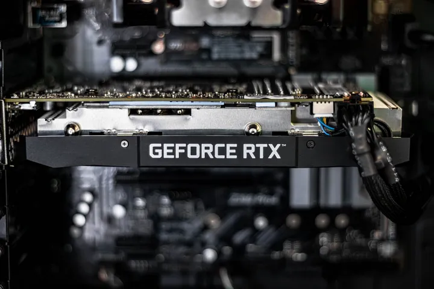
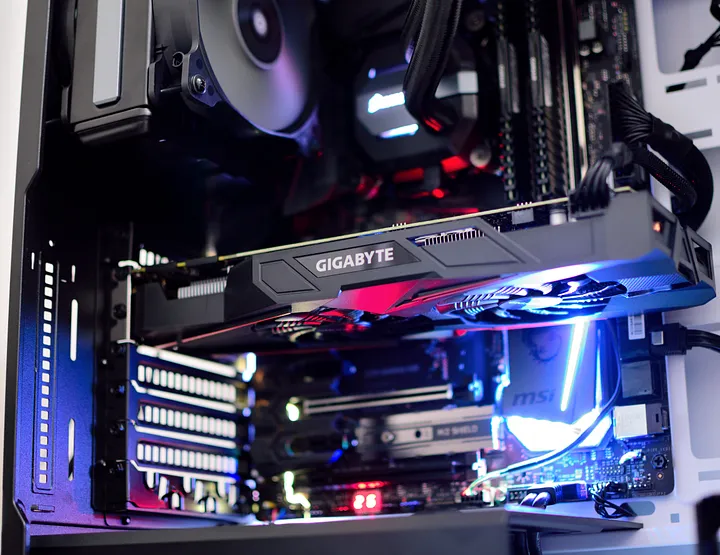

The functions, components and significance of Graphics Cards in Modern Computing
How Graphics Processing Units are Changing the Game in Todays World
Published By: Sahil Showkat at 07:49 PM - 07/07/2024

— Photo by Christian Wiediger on Unsplash
The graphics card, also known as Graphics Processing Unit (GPU), is responsible for calculating images in a computer, which can then be displayed on a monitor. It represents the interface between the processor’s calculations and the monitor. However, the development of graphics cards is now so far advanced that, in addition to this function, they can also support and relieve the CPU during calculations.
How does the Graphics Card work?
The computer’s processor calculates what data a certain program wants to display on the screen and outputs it as so-called image data. This, mostly numerical, data is then converted by the GPU so that it can be displayed on a monitor or other device. Many laptops and computers contain graphics cards that are already mounted on the circuit board, i.e. the mainboard. Such integrated graphics cards (IGP) do not have their own memory and also access the computer’s main memory. Due to the IGP’s lack of a memory component, the size is very small and can thus be used primarily for small devices, such as tablets or notebooks. However, this design is accompanied by a low clock rate and lower performance due to the shared working memory. Thus, IGPs are mainly used in devices that are mainly intended for office applications or browsing. The opposite of this is the dedicated graphics card, which has its own memory, the so-called VRAM. However, this also increases the size and requires its own cooling. Therefore, dedicated GPUs are separate components that are usually connected to the motherboard via the PCI interface. Due to their own memory, they are significantly more powerful and are used in devices that are used for gaming or machine learning purposes, for example. The majority of the remaining article will mainly deal with dedicated graphics cards since there are now significantly more use cases that require such a GPU.
What are the Components of a Graphics Card?
In many cases, a GPU consists of the following components:- Fan
- Cooling Device
- Graphics processor
- Memory
- Memory interface
- Board
- Connectors for graphics outputs (VGA, Displayport, etc.)

— Photo by Rafael Pol on Unsplash
We will now go into detail about the most important components:
Graphics Chip
The graphics chip does the actual work of the graphics card and is the brain of the system. This is where the calculations of the images are made. The other components are largely occupied with equipping the graphics chip as much as possible so that it can work at full performance and does not have to wait for the memory, for example.
Graphics Memory
The graphics memory stores all the data needed to calculate image and video files. As already mentioned, the separate memory can be used to bypass access to the computer’s main memory and thus maintain the computer’s performance.
The memory size and the connection play a decisive role in the selection so that the graphics memory does not suffer from performance losses. Overall, there is no component within the graphics card where compromises should be made anyway, otherwise, the performance of the entire system will always suffer, no matter how powerful the rest of the components are.
Memory Interface
The memory interface determines the bandwidth with which the data can be accessed. The higher the bandwidth, the more data can be transferred in a short time, which is especially important for computer games with high frame rates, i.e. many changing images.
Higher bit rates of the memory interface can generally be equated with more performance. You can think of the memory interface as the “storage” of the graphics chip. The higher the bit rate, the larger the usable storage area. In turn, with more area, the data can be placed more clearly and can thus be used again more quickly. In many graphics cards, the memory interface is the bottleneck that prevents more system performance.
Cooling Device
A powerful GPU is only really performant in combination with a sufficient cooling unit. Otherwise, the GPU can quickly overheat and the performance has to be throttled to prevent damage. However, GPUs should generally be able to withstand temperatures of 100 °C for a short time.
Depending on the GPU, active or passive cooling is used. Active cooling is still known from older devices, which emit an unmistakable fan noise when the performance increases. Active cooling is characterized by actively trying to transport the heat away from the chip. In most cases, a fan is still used, which runs at a higher or lower speed depending on the heat pattern. However, this has the disadvantage that it comes to the already described sound pattern during heavy use.
In passive cooling, on the other hand, the heat is transported away from the chip via a cooling medium, such as a liquid. The surface of the cooling device is designed very large to be able to absorb a lot of heat under load. This means that there is no additional noise even at high performance.
For which Applications would you need good Graphics Cards?
As we have already seen, all programs that have a visual output need a graphics card to be able to create the corresponding images and videos. However, integrated graphics cards are perfectly sufficient for many programs. Beyond that, there are also some special applications that require significantly more graphics performance and therefore cannot do without a powerful, usually dedicated graphics card. These include, among others:
- Gaming: To enable the fast image changes in action-packed computer games, a powerful graphics card must be able to process large amounts of data within a short time.
- 3D Modeling: When new cars, machines, or other parts are designed and planned, 3D models are created to visualize components. If the component is to be viewed from different angles, the graphics card must calculate the new views within fractions of a second, otherwise, the image may judder.
- Image Processing and Video Editing: Nowadays, images and videos are increasingly high-resolution, i.e. they contain more pixels than before. In order to be able to process all these pixels quickly, more performance is also required from the GPU.
- Machine Learning: The topic of Machine Learning does not actually fit so well into the previous list, since no high-resolution or quickly changing image sequences are needed here. However, powerful graphics cards are also very important for machine learning, since so-called tensors are used for work and calculations. These are very similar to the numerical representation of images. As a result, a GPU can calculate machine learning models much faster than conventional processors.
Types of Graphics Cards?
The most popular graphics cards are developed by two rival brands: Nvidia and AMD. No matter what kind of graphics card you purchase or find inside your PC, it's almost certainly sold directly by one of these companies or by a third-party company that has licensed the technology. That makes it easier to purchase a graphics card because, while there are a lot of companies selling graphics cards, you can always compare them directly since they are all using the same underlying architecture. In other words, an Nvidia GeForce 4080 GPU will behave more or less the same no matter if you buy it from Asus, MSI, Gigabyte, or Nvidia. AMD is a close competitor to Nvidia and the two companies sometimes leapfrog each other in performance and value. But as a general rule, the best AMD cards offer similar performance to the best Nvidia cards. Intel makes integrated graphics cards that work with the company's processors, and Intel introduced its own brand of discrete graphics cards for gaming in 2022. Meanwhile, Apple's Mac computers tend to rely on integrated graphics cards. You can find out what graphics card your computer uses at any time.
Performance Factors of Graphics Card
- Architecture: Determines efficiency in processing tasks like shading and rendering.
- CUDA Cores / Stream Processors: Number of processing units affecting computational power.
- Clock Speed: GHz rating, influencing processing speed.
- VRAM: Amount and type (e.g., GDDR6) crucial for handling data.
- Memory Bus Width: Determines data transfer capacity.
- Memory Bandwidth: Speed of data movement to/from VRAM.
- TDP (Thermal Design Power): Indicates heat generation and cooling needs.
- Manufacturing Process: Nanometer size affects efficiency and performance.
- Drivers and Optimization: Software impact on compatibility and efficiency.
- PCIe Interface: Bandwidth between GPU and motherboard.
- Cooling and Overclocking: Cooling solutions and potential for performance boost.
Future Trends of Graphics Cards
- Ray Tracing: Increasing adoption of real-time ray tracing technology for more realistic lighting, shadows, and reflections in games and simulations.
- AI and Machine Learning Integration: GPUs are increasingly used for AI and machine learning tasks, leveraging their parallel processing power for training and inference in deep learning models.
- Performance and Efficiency Improvements: Continued advancements in GPU architectures and manufacturing processes (e.g., smaller nanometer nodes) enhancing both performance and power efficiency.
- Virtual Reality (VR) and Augmented Reality (AR): GPUs will play a critical role in delivering immersive experiences in VR and AR applications, requiring higher resolutions and frame rates.
- Cloud Gaming and Streaming: Growth in cloud gaming services leveraging GPUs for rendering games remotely and streaming them to devices with minimal latency.
- Quantum Computing Compatibility: Exploration of GPUs' role in quantum computing acceleration and hybrid quantum-classical computing approaches.
- Increased Memory and Bandwidth: Expansion of VRAM capacities and faster memory technologies to handle larger textures, higher resolutions, and complex simulations.
- Environmental Considerations: Focus on energy efficiency and sustainability in GPU design, reducing power consumption and heat generation while maintaining high performance.
- Edge Computing: GPUs integrated into edge devices for processing data closer to the source, enabling faster response times and reducing reliance on centralized cloud infrastructure.
- Customization and Specialization: Greater customization options and specialized GPUs tailored for specific applications like data centers, automotive, and scientific computing.
Blog Post by: Sahil Showkat